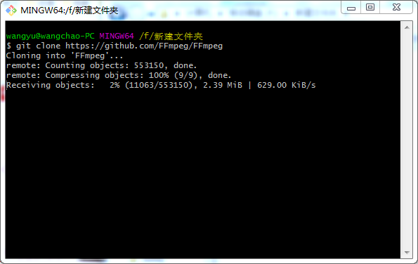
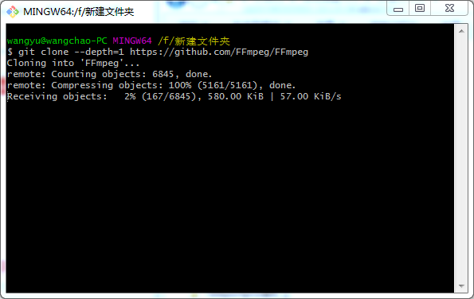

1. git commit 提交时要写注释，可以这样解决：
git commit -m "注释"2. git push 时提示 Logon failed...... 字样，并让你在命令行界面重新键入用户名密码
是因为第一次输错了密码。crtl + c 退出，重新 push。3. git push 时提示 everything up-to-date
有三种情况:未 add、未 commit、远程仓库没有分支.4. git push 时提示“失败”且让你在命令行重新键入用户名和密码
在本地 git 仓库文件夹下搜索 config 文件(不搜索是看不到的)，打开后修改 url 选项:在 http:// 后加上这个格式 “用户名:密码@” 即可，如下图:
这样就可以正常 push 了。
5. push 到 github 时出现问题，提示 could not resolve host:github.com
是因为 github.com 没有被主机给解析，解决办法:直接修改 /etc/hosts 文件，直接修改 C:\Windows\System32\drivers\etc\host 文件即可，在底部添加 :
192.30.253.112 github.com
6. push 时提示 error failed to push some refs to"仓库地址"....
这是由于你在远程仓库上在线改动，造成本地库与远程仓库分成了两条文件线，解决方法是拉取远程仓库到本地进行合并，然后再提交推送，命令依次是：
git fetch 仓库名 分支名
git diff 仓库名 分支名
git merge 仓库名 分支名
git add .
git commit -m "注释"
git push 仓库名 分支名
7. git clone 太慢的解决办法
git 在 clone 时会默认下载项目的所有记录，即所有历史版本，如果你只想要当前版本的代码，用这个命令：git clone --de前后效果如下：

可以看出下载量由 55 万 + 个锐减到了六千五百多个